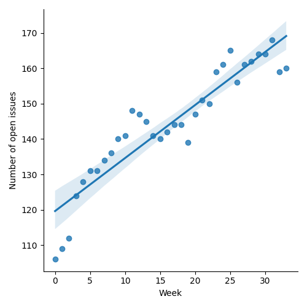
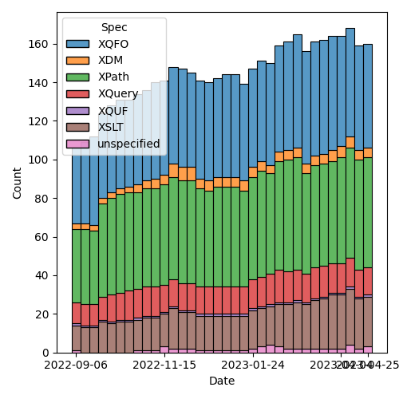
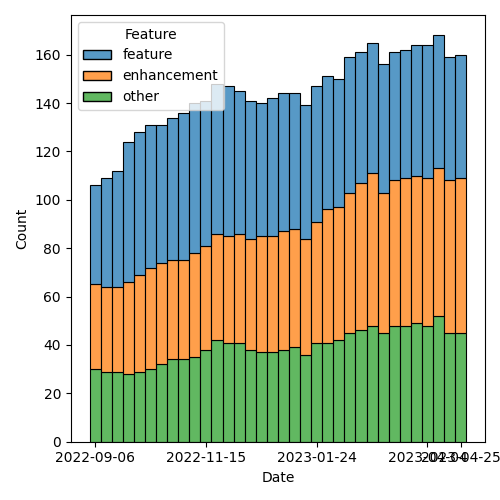

QT4 CG Meeting 033 Minutes 2023-05-02
Table of Contents
Draft Minutes
Summary of new and continuing actions [0/12]
[ ]QT4CG-002-10: BTW to coordinate some ideas about improving diversity in the group[ ]QT4CG-016-08: RD to clarify how namespace comparisons are performed.[ ]QT4CG-026-01: MK to write a summary paper that outlines the decisions we need to make on “value sequences”- This is related to PR #368: Issue 129 - Context item generalized to context value and subsequent discussion.
[ ]QT4CG-029-01: RD+DN to draft spec prose for the “divide and conquer” approach outlined in issue #399[ ]QT4CG-029-07: NW to open the next discussion of #397 with a demo from DN See PR #449[ ]QT4CG-033-01: MK to attempt to improve the first sentence of 18.1.[ ]QT4CG-033-02: MK to consider how to addmap:pairand with appropriate naming.
1. Administrivia
1.1. Roll call [10/12]
Regrets BTW.
[ ]Anthony (Tony) Bufort (AB)[X]Reece Dunn (RD)[X]Sasha Firsov (SF)[X]Christian Grün (CG)[X]Joel Kalvesmaki (JK) [0:11-][X]Michael Kay (MK)[X]John Lumley (JL)[X]Dimitre Novatchev (DN)[X]Ed Porter (EP)[X]C. M. Sperberg-McQueen (MSM)[ ]Bethan Tovey-Walsh (BTW)[X]Norm Tovey-Walsh (NW). Scribe. Chair.
1.2. Accept the agenda
Proposal: Accept the agenda.
Accepted.
1.2.1. Status so far…

Figure 1: “Burn down” chart on open issues

Figure 2: Open issues by specification

Figure 3: “Burn down” chart on open issues
1.3. Approve minutes of the previous meeting
Proposal: Accept the minutes of the previous meeting.
Accepted.
1.4. Next meeting
Four members gave regrets, possible regrets, or partial regrets for next week, so we’ll skip that week.
The next meeting is scheduled for Tuesday, 16 May 2023.
No regrets heard. MSM and NW have a scheduling constraint, but will work around it.
1.5. Review of open action items [7/12]
[ ]QT4CG-002-10: BTW to coordinate some ideas about improving diversity in the group[ ]QT4CG-016-08: RD to clarify how namespace comparisons are performed.[ ]QT4CG-026-01: MK to write a summary paper that outlines the decisions we need to make on “value sequences”- This is related to PR #368: Issue 129 - Context item generalized to context value and subsequent discussion.
[ ]QT4CG-029-01: RD+DN to draft spec prose for the “divide and conquer” approach outlined in issue #399[ ]QT4CG-029-07: NW to open the next discussion of #397 with a demo from DN See PR #449[X]QT4CG-031-03: CG to draft a PR to address issue #410[X]QT4CG-032-01: NW to make sure open PRs are on the agendas in future[X]QT4CG-032-02: MK to adjust the grammar in #433 per CGs suggestion.[X]QT4CG-032-03: MK to change 32 to 36 in 4.5.2 fn:parse-integer[X]QT4CG-032-04: JK to suggest an example for base 26.[X]QT4CG-032-05: MK to check that the terminology in format number isn’t too biased towards decimal[X]QT4CG-032-06: MK to a compatibility note about the use of ^ in format number.
1.6. Review of open pull requests
The following editorial PRs were open when this agenda was prepared. The chair proposes that these can be merged without discussion. If you think discussion is necessary, please say so.
- PR #461: Make code more visually distinct
- PR #458: Update parse-integer and format-integer following review
- PR #456: Revises numeric literal syntax
Proposal: merge these PRs.
Accepted.
2. Technical Agenda
Once again, this week’s agenda mostly continues where we left off last week. I’ve moved a couple of hopefully easy PRs to the top of the list.
2.1. PR #449: Actions from review of PR #420
See PR #449
This appeared to be editorial, but response on the mailing list suggested that discussion was warranted.
- MK: Some of these changes are in response to previous discussion;
attempt to draw it out and make it more clear.
- … Bit of moving material around
- DN: I made a comment last week; one was that there was a sentence before the definition of key-value pair is that says “entries or pairs”. I suggested it should be edited to either “entries” or “pairs”.
- MK: There’s a slight problem here that we tend to introduce things
informally first then give the formal definitions. That can be a
little confusing.
- … An entry or key-value pair is the same concept at a high level.
ACTION QT4CG-033-01: MK to attempt to improve the first sentence of 18.1.
- DN: The other thing that isn’t clear for me, we have two functions
for map entries,
map:entryandmap:entries, but we only have one functionmap:pairsand notmap:pair. - MK: Yes, once you have the table it invites that function.
- … I think it probably just seemed easy to implement.
- … But maybe we should have it.
Some consensus to add map:pair.
- JK: Where
map:entriesis decomposing wheremap:entryis constructing. Butmap:pairscreates many pairs andmap:pairis going to create a single pair. - RD: What about
entries-ofandpairs-of. - MK: Adding a verb along side can help.
ACTION QT4CG-033-02: MK to consider how to add map:pair and with appropriate naming.
- JL: We’ve got a small problem that if you take
map:entriesandmap:merger, they are inverses. But that’s not the case when you’re doing with key/value micro-maps. - MK: No, we have inverses for them.
- JL: Oh, right, okay.
Proposal: accept this PR
Accepted.
2.2. Issue #369: Namespaces for Functions
See Issue #369
- MK: This is an area where the spec contains provisional stuff that
we haven’t looked at that we need to review and accept or just scrap
(or do something else!).
- … We have a lot of namespace proliferation/clutter. This issue attempts to step back and say what the problem is and what we were trying to solve.
MK reviews the issue text.
- RD: In Java and Kotlin and maybe others, where you have a name clash, you can either reference it with the fully qualified form or you can rename it when importing.
- MK: One problem is that we use URIs not simple hierarchic names.
Some discussion of other kinds of names (something other than URIs), but without any real hope.
MK continues, reviewing his proposal in the first comment.
- SF: Talking about special namespaces and treatment about functions, and then overriding. That will give more priority to the lastly defined namespace. That will make possible global declarations with local overrides. When you do that, you have to make inclusion and exclusion symmetric.
- JL: Of the function namespaces that I need to use, the vast majority
are
math:orarray:ormap:. I don’t think there’s any clash betweenmath:and any of the others. But there is some betweenarray:andmap:. - MK: Yes, there are a few. Like
replace. - DN: First, it seems to me that this is mainly a problem with XSLT and not XQuery because in XQuery many of these prefixes don’t need to be declared.
- MK: That solves one of the problems.
- DN: In the past, I’ve repeatedly asked to do the same in XSLT. But I understand why this isn’t acceptable. Some other thoughts: in C#, there are “global usings”. What I think would be really interesting would be to have a macro facility. We already have XInclude that can include all the namespace declarations. Something like import, but import will not work.
- NW: You can’t do that with XInclude.
- MK: The issue with XSLT and XML well-formedness only applies to literal result elements. Any other use of prefixes, such as prefixes for function names, could in principle defined by a separate mechanism.
- RD: I would be against adding polymorphism into the language because
that can get quite complicated. If we say that we’re only
restricting it to within the specification, we end up with some
capabilities are available in the language but not supported by the
language. I’m not against having overloaded resolution for functions
that are manually written. If there’s a name clash, then its up to
the user to implement a disambiguating function with the same
signature.
- … That can get repetative, so we may need to look at a way to standardize that for the name clashes that we have, but I’m not sure how to do that.
- SF: When you say polymorphism will create ambiguity, we could use scoping to avoid ambiguity. And the amount of code will increase a lot if we have to write resolvers.
- RD: The issue is where you import
arrayandmapthat both have asizefunction, then if the map version takes precedence, you can’t call it with arrays and vice versa. So the polymorphism described here is that in that case the function argument type is used to disambiguate. I’m opposed to doing that automatically because it complicates things like what happens if you take a function reference tosize, what does that bind to? I’m not opposed to a user defining a size function with a type switch and doing the polymorphism manually. I’m open to how to avoid code repetition in that case. - SF: Strict typing in this case would be the answer. If you treat functions and theirs parameters, then it would be sufficient.
- MSM: Question of clarification: RD, when you say “if we imagine a priority system that puts map:size before array:size, you can call it with the other one,” but I assume that’s only for the unqualified name.
- RD: Yes, just the unprefixed version.
- MSM: I have several things to observe. I’m not sure exactly where
they point in terms of concrete answers to the questions.
- … I have felt a little uneasy about namespace clutter in XSLT.
- … As a user of XSLT and XQuery, I think the biggest question is how to reduce the number of namespace declarations so I wonder if a way to define some default ones.
- … Mike says that it’s annoying to have to put
math:in front of every math function. That’s a bit of an eye of the beholder question. - … When I was learning Java, I used fully qualified names.
- … Using the
math:prefix has never bothered me very much. - … The most important thing, I think, is that we should keep the solution we move to on this very simple. I think that with both XQuery and XSLT, there is a large(ish) population of people who use them but not all the time. They aren’t professional programmars. The more complicated this is to explain, the less it’s going to help these people and the more it’s going to hurt them. If we end up with a solution that only helps people who are writing XSLT or XQuery eight hours a day, that’s not good.
- … I do think that a rule that says you can use an unambigous name without a prefix could help. And I observe that it doesn’t require any particular changes vis-a-vis namespaces. It’s entirely consonant with the namespaces spec to say that we treat a name without a namespace by searching for it.
- … I think a priority mechanism is too far over the line, particularly if we are expecting to have any predefined bindings. I’m never going to remember the ordering in a library that I import and never look at.
- … Last observation: we’re talking about functions today, how long before someone asks about constants and variables.
- JK: +1 to everything that MSM said. The solutions that are being proposed may be disorienting. I’d like to propose that we do a new function that returns a map of the functions that have been imported and what’s been overshadowed.
- RD: MarkLogic has a “using” namespace declaration to allow you to
import all of the definitions from a URI into the current context.
We could do something similar, “using cos from math” and also
provide an alias (a different name) if it clashes.
- … In XQuery, on projects I’ve worked on, there tend to be a lot of
imports for custom modules. What’s trickier for me is using
local:for local functions.
- … In XQuery, on projects I’ve worked on, there tend to be a lot of
imports for custom modules. What’s trickier for me is using
- NW: I’m not sure we should do anything in this area, but I’m one of the minority that doesn’t find any of this namespace stuff problematic. I object to defaulted namespaces in XQuery!
- DN: I just forgot to say that we could use “decorators” for this. I made a proposal about this, I’ll revise it.
3. Any other business?
None heard.